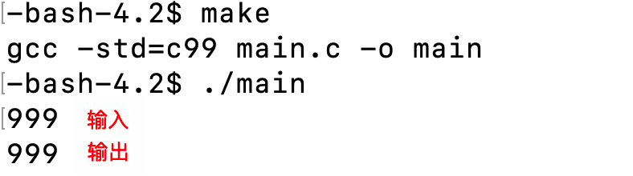

基础 I/O
前言
Linux 下一切皆文件，这个文件可以是我们通常认为的文件，也可以是任何硬件。而文件并不仅指文件内容本身，还有它的属性（大小、创建日期等），这些都是数据。由此可见，文件的所有操作，不仅包括对文件内容的操作，而且包含对文件属性的操作。
对于储存在磁盘上的文件，我们要访问它，首先要写访问文件的代码，然后编译生成可执行程序，运行它以后才能访问文件。那么，访问文件的直接主体是进程。
磁盘是作为硬件存在的，所以只有操作系统才有权限对它读写，作为上层用户，是没有办法直接访问的。所以 OS 必须要提供相应的软件层的文件类系统调用接口，这样不论是 C、C++、Java 等不同的语言，都能通过封装 OS 开放的接口作为自己语言的文件操作接口。
由于历史原因，Linux 是由 C 语言写的，所以开放的接口也是 C 语言函数，这也侧面说明了 C 语言的重要性，而且许多编程语言都是由 C、C++封装而来的。不同的语言有不同的封装，由不同的文件操作接口，但是它们的底层都是封装的系统接口。
为什么要学习操作系统层面的文件接口？
- 因为这样的接口只有一套，为什么？
- 因为 OS 只有一个
Linux 和 Windows 的接口相同吗？使用语言的用户，要不要访问文件呢？
- 不相同；要。一旦使用系统接口，编写操作文件的代码，就无法再其他不同的平台下运行，不具备跨平台性。所以要使用语言级别的接口，因为它封装了 OS 开放的接口。
为什么编译型语言要依赖库？换句话说，C 语言是如何保证跨平台性的？
- C 语言简单粗暴地把所有平台的代码都实现一遍，（通过条件编译）在不同的系统下使用不同版本的接口（代码）。
如果语言不提供对文件的系统接口封装，所有访问文件的操作，都必须使用操作系统给的接口。
Linux 认为一切皆文件：
- 对于文件而言（不考虑属性，是曾经理解的文件）：读和写；
- 显示器：打印，相当于程序向显示器写入；
- 键盘：程序从键盘读取。
以上是站在程序的角度看的，而程序被加载到内存成为进程才能进行操作，所以是站在内存的角度看待的。显示器就是 output，键盘就是 input。通过冯诺依曼体系：软件的行为转化为硬件的行为。
至此，重新认识「文件」：
- 系统角度：能够被 input 读取，或者能 output 写出的设备就叫文件；
- 狭义：普通的磁盘文件；
- 广义：磁盘、显示器、键盘、网卡、声卡等几乎所有外设。
什么叫 I/O？
I/O（英语：Input/Output），即输入／输出，通常指数据在存储器（内部和外部）或其他周边设备之间的输入和输出，是信息处理系统（例如电脑）与外部世界（可能是人类或另一信息处理系统）之间的通信。
1. C 语言文件 I/O
1.1 回顾
关于 C 语言的文件操作接口，可以移步：文件操作
首先给出 fopen 的原型：
FILE * fopen ( const char * filename, const char * mode );filename 是要打开的文件名，mode 的打开文件要做什么。
打开方式 (mode)：
| 文件使用方式 | 含义 | 如果该文件不存在 |
|---|---|---|
| “r”（只读） | 为了输入数据，打开一个已经存在的文本文件 | 出错 |
| “w”（只写） | 为了输出数据，打开一个文本文件 | 新建文件 |
| “a”（追加） | 向文本文件尾添加数据 | 新建文件 |
| “rb”（只读） | 为了输入数据，打开一个二进制文件 | 出错 |
| “wb”（只写） | 为了输出数据，打开一个二进制文件 | 新建文件 |
| “ab”（追加） | 向一个二进制文件尾添加数据 | 出错 |
| “r+”（读写） | 为了读和写，打开一个文本文件 | 出错 |
| “w+”（读写） | 为了读和写，新建 一个新的文件 | 新建文件 |
| “a+”（读写） | 打开一个文件，在文件尾进行读写 | 新建文件 |
| “rb+”（读写） | 为了读和写打开一个二进制文件 | 出错 |
| “wb+”（读写） | 为了读和写，新建一个新的二进制文件 | 新建文件 |
| “ab+”（读写） | 打开一个二进制文件，在文件尾进行读和写 | 新建文件 |
重要的是前 6 个，最重要的是前三个
我们知道，如果使用 fopen 函数以"w"的方式打开一个文件，如果文件不存在会在==当前路径==下创建文件。那么==当前路径==是哪个路径呢？

所以当前路径不是可执行程序所在的路径，而是执行可执行程序时，进程所处的路径。文末的「软硬链接」会解释它。
由于 C 语言的文件 I/O 接口众多，下面仅用最常使用的两个接口示例。
1.2 fwrite 写入
对文件写入数据示例：
#include <stdio.h>
#include <string.h>
int main()
{
FILE* fp = fopen("log.txt", "w");//创建 log.txt 新文件
if(fp == NULL) //
{
perror("fopen");
return 1;
}
int count = 5;
const char* text = "hello world\n";
while(count--)
{
fwrite(text, strlen(text), 1, fp);
}
close(fp);
return 0;
}运行程序，默认在当前目录下创建文件 log.txt，并通过 fwirte 函数写入字符串。

写入上面这个字符串，要把、0 也写到 log.txt 中吗？
- 不。因为、0 是语言的特性，文件不需要遵守，文件值存储有效数据。所以 strlen() 不要+1，strlen() 的长度不包含、0。
注：w，是先清空后再写入。清空是在打开的时候，写入数据之前就已经被清空了。
1.3 fgets 按行读取
读取文件数据示例：
#include <stdio.h>
int main()
{
FILE* fp = fopen("log.txt", "r");
if(fp == NULL)
{
perror("fopen");
return 1;
}
char line[64];
while(fgets(line, sizeof(line), fp) != NULL)
{
printf("%s", line);
}
fclose(fp);
return 0;
}1.4 C 默认打开的三个流
在「前言」中，重新认识了文件。计算机能获取我们从键盘敲下的字符，是因为键盘对“键盘文件”进行了数据写入，计算机从“键盘文件”中读取了写入的数据；显示器同理。
既然都是文件，那么为什么上面示例的时候，我们要先用 fopen 打开一个文件，才能写入和读取文件，最后还要用 fclose 关闭文件呢？而键盘显示器这些文件，为什么不需要打开和关闭操作呢？
首先我们可以猜测，显示器键盘这些文件，和上面像 log.txt 这样的文件的级别是不同的。其实，Linux 下一切皆文件，也就是 C 语言下一切皆文件，因为 Linux 是 C 写的。C 语言的程序一旦被加载到内存，以进程的形式运行起来以后，有三个文件会被默认打开，以便键盘和屏幕的访问。
这三个文件我们称之为「流」（stream），在 C 语言中，分别是 stdin（标准输入）、stdout（标准输出）、stderr（标准错误）。
通过 man 手册查看：
man stdout需要注意的是：
- 这三个东西都是
FILE*类型的。在上面 fgets 的示例中，由一个参数就是 stdout，它 q 是一个指针，指向了标准输出，也就是显示器文件。 - 与 FILE 有关的接口，都是由 C 标准库（std）维护的，它不属于操作系统，但是它封装了操作系统开放的文件 I/O 接口。
在 C++中，分别是 cin、cout、cerr。这种特性是由操作系统决定的，所有语言都有类似的概念。
2. 系统文件 I/O
实际上，C 语言的标准库文件 I/O 接口是封装系统文件的 I/O 接口的，这我们很容易理解。不仅是为了使用方法符合语言的特性（系统接口往往是偏复杂的），保证系统的安全，也要保证语言本身具有跨平台性（C 语言根据系统，封装了不同版本的接口，Linux、Windows…）。
2.1 open
通过 man 手册查看，man 2 open：
在本文只看 open，忽略 create()。下面主要针对 open() 的三个参数和返回值进行阐述。
请注意系统接口 open 的头文件，等下可能会用到。
参数 pathname
-
要打开或创建的目标文件。
-
给路径：在该路径下创建文件；
-
给文件名：在当前路径下进行创建（请明确「当前路径」的含义）。
-
参数 flags
- 打开文件的方式。
常用选项：
| 参数选项 | 含义 |
|---|---|
| O_RDONLY | 以只读的方式打开文件 |
| O_WRNOLY | 以只写的方式打开文件 |
| O_APPEND | 以追加的方式打开文件 |
| O_RDWR | 以读写的方式打开文件 |
| O_CREAT | 当目标文件不存在时，创建文件 |
注意：宏通常可以见名知意，例如 O_RDONLY，就是 read only。
拓展
如果在 man 手册往下翻，会发现很多这些选项，它们都是宏，为什么要有这么多宏呢？
试想一个场景，如果我想打开一个文件，不知道这个文件是否存在，那么就需要传入参数O_CREAT创建它；如果我也要读和写的方式打开，用参数O_RDWR；如果还不想覆盖原来的，就在文件数据末尾追加，就要用参数O_APPEND。这样就要传入好多次（个）参数，于是大佬使用了宏来代替多次传入参数。
原因：读、写、创建、追加。.. 这些状态都可以用“是”或“否”来表示，那么对于计算机，我们就可以用 0 和 1 表示状态。那么如何将它们组合呢？
我们知道，int 类型有 32 个比特位，理论上就是 32 个状态位（标志位）！用
|或操作就能将不同位的二进制数字组合。和这样类似的操作我们在用 status 变量获取子进程状态时也接触过，IP 地址也由不同区间的二进制位组合而成的。…..
在/usr/include/bits 路径下，可以找到fcntl-linux.h头文件，这里面有表中定义的宏：

如果你往下翻，可以发现，这些宏的二进制位都在 32 位比特位中的不同位置，所以才能通过或运算将这些标志位组合。
动手试试：用 open 以只读的方式打开一个文件（暂时忽略 fd，后面会解释）：
#include <stdio.h>
#include <unistd.h>
#include <string.h>
#include <sys/types.h>
#include <sys/stat.h>
#include <fcntl.h>
int main()
{
int fd = open("log.txt", O_WRONLY); // 以只读形式打开文件
if(fd < 0) // 打开文件失败
{
perror("open");
return 1;
}
// 打开文件成功
printf("open success, fd: %d\n", fd);
close(fd);
return 0;
}在 C 语言中，我们只需要给 fopen 传一个“r”, 底层封装的 open 其实是这样：
int fd = open("log.txt", O_WRONLY | O_CREAT); // 以只读形式打开文件

这样就成功创建了。
mode 参数
- 创建文件的默认权限。
如果不传入第三个参数，那么默认文件访问权限就是只读的，就如上面创建的 log.txt 一样：
文件权限：

如果不传入 mode 参数，创建出来的文件对其他用户是不可读写的。
mode 参数就是文件默认权限，以 8 进制位的形式传入，例如：
int fd = open("log.txt", O_WRONLY | O_CREAT, 0666);这也是 C 语言的 fopen 时，传入"w"选项的原理。
删掉刚才创建的文件，然后运行：

然而，权限并不是我们想象的那样（rw-rw-rw-），原因是创建出来的文件会受到 umask（默认文件掩码，默认值是 0002）的影响，最后文件的权限为：mode&(~umask)，那么就是 0666&(~0002)=0664。
要避免 umask 的影响，就要在创建文件之前用 umask 函数将默认文件掩码设置为 0：
umask(0);
int fd = open("log.txt", O_WRONLY | O_CREAT, 0666); // 以只读形式打开文件
同样，要看到测试的情况，要删掉刚才创建的 log.txt：

注意：
open 的第三个参数只有需要创建文件的情况下才会使用，也就是有O_CREAT选项的时候。
返回值
- 成功：返回新打开文件的文件描述符；
- 失败：返回-1。
上面的例子中，open 的返回值 fd 是 3，那么如果多打开几次文件呢？
#include <stdio.h>
#include <unistd.h>
#include <sys/types.h>
#include <sys/stat.h>
#include <fcntl.h>
int main()
{
umask(0);
int fd1 = open("log1.txt", O_RDONLY | O_CREAT, 0666);
int fd2 = open("log2.txt", O_RDONLY | O_CREAT, 0666);
int fd3 = open("log3.txt", O_RDONLY | O_CREAT, 0666);
if(fd1 == -1 || fd2 == -1 || fd3 == -1)
{
perror("open");
}
printf("fd1:%d\n", fd1);
printf("fd2:%d\n", fd2);
printf("fd3:%d\n", fd3);
return 0;
}可以看到，当前目录下不仅多了几个新增的文件，而且 fd 是从 3 开始递增的，0/1/2 去哪了？
2.2 read
#include <stdio.h>
#include <string.h>
#include <sys/types.h>
#include <sys/stat.h>
#include <stdlib.h>
#include <fcntl.h>
int main()
{
umask(0);
int fd = open("log.txt", O_RDONLY);
if(fd < 0) // 打开失败
{
perror("open");
return 1;
}
printf("open succsee, fd:%d\n", fd);
char buffer[64];
memset(buffer, '\0', sizeof(buffer));
read(fd, buffer, sizeof(buffer));
printf("%s\n", buffer);
close(fd);
return 0;
}3. 文件描述符
open（成功）的返回值是文件描述符，通过示例可以知道，文件描述符是一个整数，而且总是从 3 开始的，为什么呢？
3.1 概念
文件描述符（File descriptor，以下简称 fd）在形式上是一个非负整数。实际上，它是一个索引值，指向 [内核](https://zh.wikipedia.org/wiki/内核）为每一个 进程所维护的该进程打开文件的记录表。当程序打开一个现有文件或者创建一个新文件时，内核向进程返回一个文件描述符。
之前在学习进程时，一个中心思想使得我们能够理解 OS 的行为：「先描述后组织」。（我们通常认为的文件）是被进程加载到内存中的，而一个进程可以打开多个文件，系统中多个进程又指向着不同的文件，造成了整个操作系统中有许多被打开的文件。
这么多打开的文件，必定是要管理它们的，方式和 OS 管理进程类似：OS 会给每个被打开的文件创建它们的结构体file struct，它储存着文件的各种信息。然后用双向链表把这些file struct链接起来。那么 OS 对文件的管理变成了对这个双向链表的增删查改。不过这样还不足以管理文件的所属关系，毕竟文件可不想进程一样只（直接）属于 OS 一个对象，不同的进程有着自己的文件。
那么，进程和文件之间的映射关系是如何建立的？
3.2 作用
在进程部分的学习中，我们知道，当进程开始运行时，OS 会将程序的数据加载到内存中，创建属于它的task_struct、mm_struct、页表等数据结构，而建立虚拟内存和物理内存之间的映射是页表。那么对于进程和文件而言，也是类似的方式，只不过不是页表，==而是一个存在于file_struct 结构体中的一个指针数组，数组的下标就是文件描述符。==
首先简要地说明一下这些结构体之间的关系（从进程到文件）：task_struct结构体保存着进程的数据，而task_struct 中保存着另一个结构体的地址，名为file_struct，保存着文件的数据。而这个file_struct中有一个指针数组fd_array，==文件描述符的本质是指针数组的下标。==
文件描述符作为数组下标，它的作用是什么呢？
当打开一个文件时，文件会被进程从磁盘加载到内存中，OS 会给他创建file_struct，链入文件管理的双链表中。然后将file_struct的地址放在fd_array中下标为 3 的位置。此时 fd_array[3] 就会指向该文件的file struct，然后返回数组下标也就是文件描述符给进程。
为什么新打开一个文件，放置的下标是 3 而不是 0？
这是本节的重点：创建进程时，file_struct也会被创建。对于 C 语言来说：一旦进程被创建，就会有 3 个流默认被打开着，分别是标准输出、标准输入和标准错误。这是在语言层面上的体现，由此可以推测，底层的操作系统中，fd_array 的前三个位置也和它们有关，而且也可以推测，C 语言是封装了这个指针数组的。
对于语言，我们说进程创建时默认打开了 3 个流，那么对于 OS 来说，创建进程时就是将进程的 task_struct 指向的 file_struct 中的 fd_array[0]、fd_array[1] 和 fd_array[2] 给占了，怎么占的呢？
Linux 下一切皆文件，我们知道，OS 会将各种接入计算机的硬件看作文件，那么要管它们，给它们创建对应的 file_struct 必不可少，fd_array[0]、fd_array[1] 和 fd_array[2] 分别储存着输入设备、输出设备的 file_struct 的地址。它们分别对应上层的输入、输出、错误流，对应底层的（设备）键盘、显示器等输入输出硬件。
文件描述符和 FILE 之间的关系？
- 文件描述符是系统调用的返回值，它的本质是指针数组的下标；
- FILE 是 C 语言的一个结构体，它是 C 标准库提供的，其中包含了文件的各种信息，底层是封装了文件描述符的。
在底层的 OS 角度，只有文件描述符才是文件的“身份证”。
用代码验证一下：
#include <stdio.h>
#include <unistd.h>
#include <sys/types.h>
#include <sys/stat.h>
#include <fcntl.h>
int main()
{
printf("stdin, %d\n", stdin->_fileno);
printf("stdout, %d\n", stdout->_fileno);
printf("stderr, %d\n", stderr->_fileno);
return 0;
}
因为 stdin、stdout 和 stderr 都是 C 语言的结构体指针，所以可以访问结构体成员。其中_fileno 就是封装了文件描述符的成员。
3.3 分配规则
在看了 2.1 中的示例和上面的阐述后，不难知道为什么用 open 打开文件后的返回值是从 3 递增的整数。
你有注意到吗？open 和 close 是如何建立联系的（我的意思是，open 一个文件以后，close 怎么知道刚才打开的是哪个文件）？从 2.1 的示例中可以知道，close 的参数是 open 的返回值，也就是指针数组的下标。
那么，可以关闭 fd=0/1/2 的文件吗？
- 可以。但是不要关闭 fd=1 的文件，因为它对应着输出设备的文件，否则就看不到==显示器显示的==结果了。
例如，就 2.1 的代码，可以用 close 把 fd=0/2 的文件关掉，然后再打开一个其他文件，看看 fd 的情况：
#include <stdio.h>
#include <unistd.h>
#include <sys/types.h>
#include <sys/stat.h>
#include <fcntl.h>
int main()
{
close(0); // 关闭标准输入
close(2); // 关闭标准错误
umask(0);
int fd1 = open("log1.txt", O_RDONLY | O_CREAT, 0666);
int fd2 = open("log2.txt", O_RDONLY | O_CREAT, 0666);
int fd3 = open("log3.txt", O_RDONLY | O_CREAT, 0666);
if(fd1 == -1 || fd2 == -1 || fd3 == -1)
{
perror("open");
}
printf("fd1:%d\n", fd1);
printf("fd2:%d\n", fd2);
printf("fd3:%d\n", fd3);
return 0;
}
从结果来看，在最开始关闭了下标为 0 和 2，后来打开的文件的信息把这几个位置都填上了。
规则：文件描述符将空的位置填完以后，才会往后递增。
以图示理解进程时如何管理文件的：
4. 重定向
4.1 概念
总之就是一句话：数据本来要写入到 A 文件中，却被写到了 B 文件中。例如，在学习 Linux 基本操作时，就有这样的重定向操作：
echo 重定向测试 > test.txt
4.2 重定向的原理
输出重定向示例
在理解了文件操作符的作用和分配规则以后，理解重定向的原理也就不难了。
==重定向的本质是修改下标为 fd 的数组元素的指向。==
首先来看，如果关掉了 fd=1（标准输出）的文件后，会发生什么？
#include <stdio.h>
#include <unistd.h>
#include <sys/types.h>
#include <sys/stat.h>
#include <fcntl.h>
int main()
{
close(1);
int fd = open("log.txt", O_WRONLY | O_CREAT, 0666);
if (fd < 0)
{
perror("open");
return 1;
}
printf("hello world\n");
close(fd);
return 0;
}原理
对代码的解读：
C 语言的 printf 函数默认往 stdout 这个文件中打印。而 stdout 是一个 FILE *类型的结构体指针，它成员变量_fileno 默认设置为 1，也就是也就是 C 标准库设置好了 stdout->_fileno 和 fd=1 之间的映射关系。既然 fd=0、1、2 是被占用的，那么 close(1)，下一次分配的一定是 1。打开 log.txt，log.txt 的 fd 就是 1，而 C 标准库只会认 fd，不会认名字。此时在 C 标准库看来，stdout 就是 log.txt。
上面的程序想把打印的内容重定向到 log.txt 中，但是 cat 它却无内容，为什么呢？
此处和 C 标准库维护的缓冲区有关，后面会介绍。现在试试吧 close 语句关掉？
//close(fd); 注释掉 close 语句

这样就完成了重定向，不过有点“歪门邪道”，下面用一种“正统”的方法实现重定向，同样是上面的代码，close 取消注释，然后再它之前添加：
fflush(stdout);
close(fd);结果同样可以实现数据的重定向。
fflush 是 C 语言的函数，它的作用是将缓冲区的内容强制刷新到指定的三个文件中，在这里是 stdout。C 标准库维护的缓冲区，稍后也会着重介绍。
在本小节中，最重要的是理解重定向的原理。在语言层面，fd 和 stdout、stdin、stderr 是绑定的，而且对于 OS 而言，它只认 fd，不认名字。所以如果在某个进程中使用系统调用 close 掉 fd=1，新打开的文件 log.txt 的 fd 必定是 1。那么从语言的映射关系来看，log.txt 就是 stdout。
用图示理解重定向的过程：

从图示可以知道，输出重定向就是打开一个文件的同时，OS 在内核中创建一个 file 对象，让进程的 fd_array[1] 重新指向打开文件的 file 对象。
追加重定向
上面的输出重定向如果测试几次，会发现它和 C 语言以"w"形式使用 fopen 打开文件一样，每次都是先清空然后再输入，如何实现追加重定向呢？
很简单，在 open 的第二个参数中加上 O_APPEND：
int fd = open("log.txt", O_WRONLY|O_APPEND|O_CREAT, 0666);输入重定向
和输出重定向的原理类似，都是修改 fd_array[] 元素的指向。对于 C 语言，输入是从 stdin 读取的数据，所以要修改的下标 fd=0。
#include <stdio.h>
#include <unistd.h>
#include <sys/types.h>
#include <sys/stat.h>
#include <fcntl.h>
int main()
{
close(0);
int fd = open("log.txt", O_RDONLY | O_CREAT, 0666);
if (fd < 0)
{
perror("open");
return 1;
}
char buffer[64];
while (scanf("%s", buffer))
{
printf("%s\n", buffer);
}
close(fd);
return 0;
}使用系统调用 close(0)，关闭 stdin 标准输入文件，对这个程序而言，就是把键盘文件关闭了。运行程序，C 语言函数 scanf 把 log.txt 中的数据都读取出来了。
C 语言中，scanf 函数默认从 stdin 读取文件，所以使用它传参时不需要加上 stdin，printf 也是一样的：
#include <stdio.h> int main() { int i = 0; scanf("%d", &i, stdin); printf("%d\n", i, stdout); return 0; }
补充
对于 stdout 和 stderr，都是对应的显示器，它们的区别在于：
-
当只进行打印输出时，它们没有区别；
-
当我们进行重定向操作时，只会把本来要输出到 stdout 的内容重定向。
和 printf 和 scanf 对应，perror 默认输出到 stderr 中：
#include <stdio.h>
int main()
{
printf("stdout printf\n");
perror("stderr perror");
fprintf(stdout, "stdout fprintf\n");
fprintf(stderr, "stderr fprintf\n");
return 0;
}
fprintf 是 C 语言文件操作的函数，是专门用于在文件中输出字符串内容的，但是也可以指定它输出的文件。（stdout 和 stderr 也是文件）。
perror 是 C 语言函数，如果打印成功，会提示
:Success。
它们都会被打印出来，但是如果想让打印出来的语句重定向到一个文件，比如 log.txt 中：
./main > log.txt结果表明，重定向操作不会把本来要输出到 stderr 文件中的数据输出到 log.txt，只会对 stdout 文件操作。
5. dup2
在系统调用中，dup2 封装了类似上面示例中的操作，仅需要传入两个新旧文件描述符，就能完成重定向操作。
5.1 介绍
使用 man 手册查看系统调用 dup2 的介绍：
man 2 dup或：
man 2 dup2
原型
int dup2(int oldfd, int newfd);功能
- dup2 会将 fd_array[oldfd] 的内容拷贝到 fd_array[newfd] 中。
返回值
- 调用拷贝成功：返回 newfd；
- 失败：返回-1。
注意事项
- 如果 oldfd 不是有效的文件描述符，则 dup2 调用失败，并且此时文件描述符为 newfd 的文件没有被关闭；
- 如果 oldfd 是一个有效的文件描述符，但是 newfd 和 oldfd 具有相同的值，则 dup2 不做任何操作，并返回 newfd。
示例
打开一个文件 log.txt，用 fd 变量保存文件的文件描述符，然后 close(1)，关闭 stdout 文件，使用 dup2 实现 stdout 数据到文件 log.txt 的重定向。
#include <stdio.h>
#include <unistd.h>
#include <sys/types.h>
#include <sys/stat.h>
#include <fcntl.h>
int main()
{
int fd = open("log.txt", O_WRONLY | O_CREAT, 0666);
if(fd < 0)
{
perror("open");
return 1;
}
close(1); // 关闭 stdout 文件
dup2(fd, 1); // 将数据重定向到 log.txt 中
printf("hello, world <- printf\n");
return 0;
}printf 默认向 stdout 输出，在使用 dup2 重定向后，本应该在显示器上输出的数据被写到了文件 log.txt 中。
当然，使用 fprintf 指定输出文件是 stdout 结果也是一样的，在 printf 语句后再加上：
fprintf(stdout, "hello, world <- fprintf\n");
6. C 标准库中的 FILE 结构体
从重定向的原理和示例可以知道，尽管 C 标准库中定义 stdin、stdout 和 stderr 是 FILE 结构体指针，但因为语言层是封装系统调用的，所以 stdin、stdout 和 stderr 这些，只是语言中给文件描述符起的名字。实际上系统只认识文件描述符 fd，即 fd_array[] 的下标。
正因如此，C 语言标准库定义的 FILE 结构体内部一定封装了等价于文件描述符的成员。
6.1 FILE 中的_fileno
在/usr/include/libio.h头文件中，可以查看struct _IO_FILE结构体的定义 (line:246)：
struct _IO_FILE {
int _flags; /* High-order word is _IO_MAGIC; rest is flags. */
#define _IO_file_flags _flags
/* The following pointers correspond to the C++ streambuf protocol. */
/* Note: Tk uses the _IO_read_ptr and _IO_read_end fields directly. */
char* _IO_read_ptr; /* Current read pointer */
char* _IO_read_end; /* End of get area. */
char* _IO_read_base; /* Start of putback+get area. */
char* _IO_write_base; /* Start of put area. */
char* _IO_write_ptr; /* Current put pointer. */
char* _IO_write_end; /* End of put area. */
char* _IO_buf_base; /* Start of reserve area. */
char* _IO_buf_end; /* End of reserve area. */
/* The following fields are used to support backing up and undo. */
char *_IO_save_base; /* Pointer to start of non-current get area. */
char *_IO_backup_base; /* Pointer to first valid character of backup area */
char *_IO_save_end; /* Pointer to end of non-current get area. */
struct _IO_marker *_markers;
struct _IO_FILE *_chain;
int _fileno;
#if 0
int _blksize;
#else
int _flags2;
#endif
_IO_off_t _old_offset; /* This used to be _offset but it's too small. */
#define __HAVE_COLUMN /* temporary */
/* 1+column number of pbase(); 0 is unknown. */
unsigned short _cur_column;
signed char _vtable_offset;
char _shortbuf[1];
/* char* _save_gptr; char* _save_egptr; */
_IO_lock_t *_lock;
#ifdef _IO_USE_OLD_IO_FILE
};在这个头文件中，还有这样的定义 (line:316)：
typedef struct _IO_FILE _IO_FILE;
在同路径下的stdio.h头文件中，还可以看到这样的定义 (line:48、74)：
typedef struct _IO_FILE FILE;
#include <libio.h>在头文件<libio.h>中，有一个成员变量名为_fileno，它就是封装的文件描述符。而在 C 语言的标准输入输出库stdio中，包含了系统库libio.h，并将FILE作为_IO_FILE的别名。
那么结合上面的内容，C 库函数中的 fopen 函数，打开文件这个操作背后的逻辑是什么？
-
C 库函数 fopen 处于 OS 上层，当它使用系统调用 open 成功打开一个文件时，C 标准库会给它生成一个 FILE 结构体；
-
系统调用 open 处于 OS 底层，当它被 fopen 调用时，它会去打开对应文件，然后分配给它一个文件描述符 fd，并返回这个 fd 给在上层调用它的 fopen；
-
上层 fopen 接收到底层 open 的返回值以后，通过 fd 的值是否大于 0 就可以判断打开文件是否成功。如果成功，fopen 会将接收的返回值 fd 复制给文件对应的 FILE 结构体中的_fileno 成员变量。最后，fopen 返回结构体的地址，即一个 FILE *类型指针。
类似地，如 fread、rwrite、rputs、fgets 等 C 标准库的其他文件 I/O 函数，实现的原理都是如此，只不过输入和输出的方向相反。万变不离其宗，文件的操作离不开文件描述符。
小结
进程如何管理文件？
-
先描述后组织。
-
文件描述符的本质是 fd_array[] 的下标，这个结构体指针数组的地址是被进程的 task_struct 保存的。进程通过 fd_array[] 和用 fopen 函数得到的下标，就能通过特定下标元素和文件之间的映射关系管理文件。
6.2 FILE 中的缓冲区
引入
在早期学习 C 语言时，一定会遇到使用 getchar()、fflush 等函数才能让我们正常地打印东西，但是至今还是一头雾水，不知道原理所在，只知道有“缓冲区”这个东西存在，它让人无语的地方就在于时不时能碰到它，却不能彻头彻尾地解决它。
首先以一个程序引入，代码中分别调用了两个 C 库函数和一个系统调用，并且在 return 语句之前 fork 创建了子进程：
#include <stdio.h>
#include <unistd.h>
int main()
{
printf("hello world <- printf\n");
fputs("hello world <- fputs\n", stdout);
write(1, "hello world <- write\n", 21);
fork();
return 0;
}
显然，都所有输出语句都正常执行了。但是如果要将打印到显示器的内容重定向到一个文件 log.txt 中呢？

- 不重定向，直接打印：输出到显示器无异常；
- 重定向：C 库函数会被执行两次，系统调用只会被执行一次。
这两种不同的情况和 fork 有关，虽然它在语句最后。
认识
首先要说明，缓冲有三种方式：
-
无缓冲：标准 I/O 库不缓存字符；
-
行缓冲：只有在输入/输出中遇到==换行符==的时候，才会执行 I/O 操作，一般而言，行缓冲对应显示器文件；
-
全缓冲：I/O 操作只有在缓冲区==被填满了之后==才会进行，一般而言，全缓冲对应磁盘文件（是磁盘这个文件，而不是磁盘中的文件）。
-
特殊情况：
- 用户强制刷新：fflush；
- 进程退出。
补充：
无缓冲：标准库不缓存并不意味着操作系统或者设备驱动不缓存；
行缓冲：涉及到终端的流：例如标注输入 (stdin) 和标准输出 (stdout)；
全缓冲：对驻留在磁盘上的文件的操作一般是有标准 I/O 库提供全缓冲。缓冲区一般是在第一次对流进行 I/O 操作时，由标准 I/O 函数调用 malloc 函数分配得到的。
术语 flush 描述了标准 I/O 缓冲的写操作。缓冲区可以由标准 I/O 函数自动 flush（例如缓冲区满的时候）; 或者我们对流调用 fflush 函数。
为什么要有缓冲区？
I/O 过程是最耗费时间的，就像借钱谈话 1 小时，转账 5s 一样。缓冲区的策略是为了效率，而不是为了提高用户体验。例如，我要寄东西给远在北京的同学，如果我自己去送的话，非常慢，如果寄快递，我们就不用跑那么远了；快递公司也不傻，一定是等到车子塞得差不多了以后才会送货。缓冲区就是 OS 和上层之间传输数据的快递公司，它提高了整机效率，也就提高了用户的响应速度。
缓冲区就是一段内存空间（一般是字符数组的形式），它是由语言本身维护的，上面的例子中，缓冲区就是 C 标准库提供的。其实之前在实现简易 shell 和本文中 1.3 程序中的 line 字符数组，都有用到缓冲区，其实它就是一个临时容器。
其实，当缓冲区的策略是全缓冲时，效率才是最高的，很容易理解，快递公司的老板当然希望包裹塞满车子，省油费。对于操作系统来说，只有当缓冲区满了以后才刷新，I/O 次数就会降到最低，对外设的访问次数也是最低，自然就提高了效率。所以对于所有设备，它们的刷新策略都倾向于全缓冲。
为什么是「倾向于」呢？
因为需要数据被处理的结果的主体是人，计算机只是工具，人们需要接收动态的数据结果，就要通过显示器实时查看。如果采用全刷新，人们也就不用时时刻刻盯着股价看了，也不知道它什么时候显示走势，所以行刷新通常对应显示器文件。所以，除了全刷新之外的刷新策略（包括特殊情况），都是一种折中手段，一方面要保证效率，一方面要照顾用户体验。对于特殊情况，可以由用户自己决定。
原理
造成上面同一打印方式不同输出文件而造成不同的结果的原因是：OS 根据输出文件的不同，采取了不同的刷新策略。
需要注意的是，前两个打印语句都是 C 标准库中的，第三个打印语句是系统调用，而重定向以后却是 C 标准库的打印函数输出了两次。这里也可以验证，我们所说的“缓冲区”是 C 标准库维护的，如果缓冲区都是 OS 内部统一提供的（这句话暗示了 OS 也有自己的缓冲区），也就不存在这个奇怪的现象了。
对于两种输出方式，缓冲区的策略有何不同？
- 向显示器输出：刷新策略是行刷新，注意每个打印语句（C 函数和系统调用）中都有
\n。只要遇到\n，数据就会被刷新到显示器文件中，那么执行到 fork 时，数据都已经被输出到显示器上了，所以行刷新时，最后的 fork 不起作用； - 输出重定向：刷新策略从行刷新转变为全刷新（为什么是“转变”？因为打印函数默认是行刷新）。那么对于全缓冲而言，它是不认识
\n的，只会等缓冲区满了或者进程要结束才会刷新，所以输出语句中的\n就没有意义了。
我知道重定向的刷新策略是全刷新了，那么为什么输出重定向时 C 语言的函数会被执行 2 次？
写时拷贝。既然是全缓冲，这些打印语句输出的数据都会被暂时保存在缓冲区中（注意，这里的缓冲区其实分为两部分：C 标准库维护的缓冲区和 OS 内核缓冲区）。也就是说，fork 之前的打印语句的内容都还未被写到文件中。联系进程部分的知识，我们知道 fork 以后，父子进程的上下文数据和代码是共享的，其中也包括缓冲区中的数据。所以 C 语言的打印语句会被执行两次。
为什么系统调用只被执行一次？
因为 C 语言内部是封装了系统调用的，例如 printf 函数，它会调用系统接口 write，将数据写入到 printf 指定的文件中。对于 fork 以后的父子进程，它们都执行了一次 C 语言打印函数，所以每个 C 语言打印函数都调用了两次系统接口 write。

其实，在 fork 之后，数据也只是被保存在 C 标准库维护的缓冲区里，fork 做的事就是创建子进程，父进程的数据会发生写时拷贝，只有当进程退出时（执行 return 语句），父进程准备把数据从缓冲区刷新出来了，子进程也要进行同样的操作。请注意，数据不是从 C 标准库维护的缓冲区被直接刷新到文件中，还要经过系统调用将数据暂存到内核的缓冲区，最后数据才会被写入到文件中。（此部分暂且不需要对内核缓冲区作深入研究，只要知道它的存在即可。）
C 标准库维护的缓冲区，是“用户层”的缓冲区，实际上 FILE 结构体中也保存着用户缓冲区的信息：
/* The following pointers correspond to the C++ streambuf protocol. */
/* Note: Tk uses the _IO_read_ptr and _IO_read_end fields directly. */
char* _IO_read_ptr; /* Current read pointer */
char* _IO_read_end; /* End of get area. */
char* _IO_read_base; /* Start of putback+get area. */
char* _IO_write_base; /* Start of put area. */
char* _IO_write_ptr; /* Current put pointer. */
char* _IO_write_end; /* End of put area. */
char* _IO_buf_base; /* Start of reserve area. */
char* _IO_buf_end; /* End of reserve area. */
/* The following fields are used to support backing up and undo. */
char *_IO_save_base; /* Pointer to start of non-current get area. */
char *_IO_backup_base; /* Pointer to first valid character of backup area */
char *_IO_save_end; /* Pointer to end of non-current get area. */7. 文件系统
7.1 背景
我们在之前通常所说的“文件”是磁盘中的文件（磁盘级文件），它们都是没有被打开的文件。学习磁盘级文件有以下侧重点：
- 单个文件角度：
- 文件在哪里
- 大小
- 其他属性
- 系统角度：
- 一共有多少文件
- 各自属性在哪里
- 如何快速找到
- 还能存储多少个文件
- 如何快速找到指定文件
- …
为了更好地存取文件，如何对磁盘文件分门别类地存储？在学习磁盘文件之前，当然要对磁盘这个硬件有一定的了解。
7.2 磁盘
磁盘的特性
首先，要区分磁盘和内存的区别：
- 内存：掉电易失存储介质
- 磁盘：永久性存储介质 ，如 SSD、U 盘、flash 卡、光盘、磁带。..
磁盘是一个外设，是计算机中唯一一个机械设备，所以从结构上说它很慢（相对于 CPU 而言），但是 OS 会有一些提速方式（不展开讲）。所有的普通文件都是存储在磁盘中的。
磁盘的结构
磁盘由盘片、磁头、伺服系统、音圈马达（旋转）等部分组成。
物理结构：计算机只认识 0 和 1，盘面上通过磁极的南和北规定 0 和 1。向磁盘写入数据，实际上通过磁头改变磁盘的正负。
光盘看一段时间就会变卡，这是因为磁头把数据影响了，可以类比飞机低空 1m 贴地飞行，对地上的影响。
存储结构：磁道（同心圆），磁道组成扇区。半径相同的磁道是柱面（一摞）。
如何在磁盘中找到对应文件？
在物理上找到任意一个扇区->CHS 寻址
- 在哪个面？磁头对应盘面 (C)
- 在哪个磁道 (H)
- 在哪个扇区 (S)

一般传统的磁盘规定每个扇区的大小是 512 字节。
通过 CHS 寻址，就能找到数据在磁盘中的位置。
抽象磁盘结构：把这一摞磁盘想象成线性结构。就像磁带卷成一盘一样。

把磁盘当成磁带，将它拉成线性结构，符合我们对数组的抽象理解：
在 OS 眼中，这每一个扇区就是一个数组，那么对磁盘的管理也就转变为对数组的管理。比如数组的前 10000 个位置是某个盘的位置，前几百个位置是某个扇区的位置，根据下标的范围，OS 便能管理磁盘不同盘面、不同磁道和不同扇区的数据。
-
将数据存储到磁盘，在逻辑上就相当于将数据存储到该数组。
-
找到磁盘特定的扇区，就是找到数组特定的位置。
-
对磁盘的管理，就是对数组的管理。
对于一块很大的磁盘，直接管理是非常有难度的，例如 512GB：处理方法是将大的磁盘拆分为容易管理的小磁盘的集合，这就是分治。所以对磁盘的管理，实际上就是对一个小分区的管理，因为每个小分区的管理方式都是一套的。对于这个 100GB 的小分区，它依然很大，就像把国家拆分为若干省、进而拆分为市、区、街道。.. 这个操作很像我们对磁盘进行分区。
对于磁盘中的每个分区，它由块组组成。

7.3 EXT2 文件系统
文件系统
文件系统和操作系统类似，都是存储和组织计算机数据的方法。它使得对其访问和查找变得容易，文件系统使用文件和树形目录的抽象逻辑概念代替了硬盘和光盘等物理设备使用数据块的概念，用户使用文件系统来保存数据不必关心数据实际保存在硬盘（或者光盘）的地址为多少的数据块上，只需要记住这个文件的所属目录和文件名。在写入新数据之前，用户不必关心硬盘上的那个块地址没有被使用，硬盘上的存储空间管理（分配和释放）功能由文件系统自动完成，用户只需要记住数据被写入到了哪个文件中。
文件系统就像操作系统一样不止一个，本节主要了解 EXT2 文件系统。
介绍
第二代扩展文件系统（second extended filesystem，缩写为** ext2**），是 Linux 内核所用的文件系统。
结构
ext2 中的空间被分成了若干块（blocks），这些块被分到块组（block group）中。大型文件系统上通常有数千个块。任何给定文件的数据通常尽可能包含在单个块组中。这样做是为了在读取大量连续数据时尽量减少磁盘寻道次数。
每个块组包含超级块（super block）和块组描述符表（group descriptor table，GDT）的副本，所有块组包含块位图（block bitmap）、inode 位图（inode bitmap）、inode 表（inode table），最后是数据块（data block）。
超级块包含对操作系统启动至关重要的重要信息。因此，备份副本在文件系统中的多个块组中制作。但是，通常仅在文件系统的第一个块中找到它的第一个副本用于引导。
组描述符存储块位图的位置、inode 位图以及每个块组的 inode 表的开始。这些又存储在组描述符表中。
在本节中，我们着重了解 inode，在此之前，需要把握整体结构。
由图示可见，每个块组（block group）都由以下几个部分组成：
- super block： 存放文件系统本身的结构信息。记录的信息主要有：data block 和 inode 的总量、未使用的 data block 和 inode 的数量、一个 data block 和 inode 的大小、最近一次挂载的时间、最近一次写入数据的时间、最近一次检验磁盘的时间等其他文件系统的相关信息。super block 的信息被破坏，可以说整个文件系统结构就被破坏了；
- group descriptor table： 块组描述符表，描述该分区当中块组的属性信息；
- block bitmap： 块位图当中记录着 Data Block 中哪个数据块已经被占用，哪个数据块没有被占用；
- inode bitmap： inode 位图当中记录着每个 inode 是否空闲可用；
- inode Table： 存放文件属性，即每个文件的 inode（index node）；
- data blocks： 存放文件内容。
启动块（boot block）的大小是固定的，其他块组的大小是根据写入的数据量确定的，且无法更改。
管理方式
文件系统是属性信息的集合，虽然磁盘的基本单位是 512 字节的扇区，但是 OS 中的文件系统和磁盘进行 I/O 操作的基本单位是 4KB（8*512byte）。
为什么不用 512 字节为单位？
- 512 个字节太小了，有可能会导致多次 I/O 操作，进而导致效率降低；
- 基础技术是在发展中的，所以 OS 作为软件不能限制硬件的发展，基本单位大一点，可以更好地适应以后硬件的性能。到时候再不行的话再修改 OS 的源码就好了。这是硬件和软件（OS）之间进行解耦。
下面解释块组（block group）的组成部分的作用：
- data block：多个 4KB（8 个扇区）大小的集合，报错的都是特定文件的内容；
- inode table：inode 是一个大小为 128 字节的空间，保存的是文件的属性。这个块组中是所有文件的 inode 空间的集合，需要标识唯一性，每一个 inode 块，都要有一个 inode 编号。inode 就像是文件的身份证，一个文件、一个 inode、一个 inode 编号；
- block bitmap：假设有 10000+个 inode 结点，那么就有 10000+个比特位。比特位和特定的 inode 是一一对应的；
- GDT：块组描述符。它用来标识这个块组的信息，比如它有多大？已使用多少？有多少个 inode？已经占用了多少个？还剩多少？一共有多少个 block？使用了多少？…
- super block：保存当前分区的属性，所以它非常重要。它是作为“备份”而存在的。
上面的这些块组组成部分，能让一个文件的信息可追溯、可管理。
一个文件可以有多个 block 吗？
可以，当文件很大的时候。不是所有的 data block 都只能存数据，也可以存其他块的块号。例如 15 容量，前 12 个存数据，后 3 个存其他块，一个块 4 个字节，能指向上千个其他块。而且其他块还能指向其他块，类似树状结构，这就能储存大体积文件了。
在 inode 结构体中，有一个数组 block[]，它维护着每个文件使用的数据块和 inode 结构体之间的映射关系。它的长度为 15，其中前 12 个元素分别对应该文件使用的 12 个数据块，剩余的 3 个元素分别是一级索引、二级索引和三级索引，当该文件使用数据块的个数超过 12 个时，可以用这三个索引进行数据块扩充。–图片来源于 维基百科

格式化
如果每个块组中的组成部分都进行上面的操作，那么每个分区都会被写入管理数据，整个分区（块组组成分区）也就被写入了系统文件信息，我们将它称为“格式化”。其实格式化磁盘，就是格式化区块的属性，data block 那些储存信息的分区。
创建文件
- 内核会在当前区块中遍历 inode 位图，得到状态为空闲（0）的 inode，然后将它的状态置为 1；
- 在 inode 表中找到对应 inode，然后将文件属性填入 inode 对应的结构体中；
- 文件名是用户提供的，inode 编号是文件系统给的，OS 会建立它们之间的映射关系，然后把映射关系保存到文件目录的 data block 中。
查找（写入、查看）数据
- 内核在当前区块的目录文件的 data block 中找到文件的 inode 结构体，通过文件的 inode 编号，找到对应的 inode 结构体；
- 通过 inode 结构体，找到储存文件内容的数据块，将数据写入其中；
- 如果数据块不存在或者数据块已满，内核会遍历块位图得到一个状态为空闲的块组的块号，在数据区找到块号对应的空间，将数据写入其中，最后建立新数据块和 inode 结构体之间的映射关系。
删除文件
- 将文件对应的 inode 在 inode 位图中的状态置为无效；
- 将文件已申请的数据块在块位图中的状态置为无效。
我们知道，磁盘和 OS 进行 I/O 操作的最小单位是 512 字节，那么对于扇区，它只有 0/1 两种状态，对应着占用和空闲。删除只是我们想象的理解，实际上在计算机中不存在真正的删除，因为数据是覆盖上去的。
文件系统删除文件，只是将文件的 inode 号和数据块号的状态置为空闲，但数据还是存储在内的。如果丢失了重要数据，请不要让 OS 进行大量的 I/O 操作，因为这很可能会被后来的文件覆盖。
这也可以理解为什么删除文件咔嚓一下，拷贝文件却要非常久。
因为拷贝文件是文件系统创建文件，然后对文件写入数据。在写入数据之前，文件系统要做很多工作。而删除只需要两步。
面试题：
明明还剩有容量，创建文件却频频失败，为什么？inode 是固定的，data block 也是固定的呀？
- inode 是固定的，data block 也是固定的，有可能出现一个能分配而另一无法分配的情况，但这是没办法的事。
理解目录
目录是文件吗？
- 是。
- 目录要有自己的 inode->要有自己的 data block。因为目录也是有自己的属性的。目录的 data block，存的是文件名的 inode 编号的映射关系，它们互为 key 值。
- 连硬件都被 Linux 认为是文件，文件目录也是作为文件被 OS 管理的；
- 目录也有它自己的属性信息，目录的 inode 结构体中存储的是目录的属性；
- 目录的作用是存储文件结构，那么它也是有自己的内容的，目录的数据块中存储的是该目录下的文件名和所有文件对应的 inode 结构体地址。
目录有自己的属性，也有它自己的内容，当然可以被认为是文件。
inode vs 文件名
指令：
ls -iOS 如何找到文件？
inode 编号（分区内有效，在哪个分区，就是哪个编号）->分区特定块组（block group）->inode->文件属性->内容。
↑最大的问题就是，OS 怎么一开始就知道 inode 编号的呢？我们操作文件，都是用文件名来标识和识别文件的呀。
在 Linux 内核中，inode 属性里，没有文件名这样的说法：
- 一个目录下，可以保存很多文件，但是文件名不能重复；
- 目录也是文件。
为什么我们想要在自己的目录里创建文件，必须要有写（w）权限呢？
- 因为目录也是文件，在目录下创建文件，就是要把文件的属性写入到目录文件中。
为什么使用 ls 指令时，ls -l 显示文件的各种属性，必须要有 r 权限呢？
- 因为目录是文件，查看（磁盘）文件的属性也是从目录中读取文件的信息。
回答最初的问题，为什么 OS 一开始就知道 inode 编号？
- 依托于目录结构。不管是相对路径和绝对路径，它都能通过目录结构找到想操作的文件。
8. 软硬链接
8.1 准备工作
创建一个文件 testLink.txt，然后给它一些内容。
touch testLink.txt
echo "hello world" > testLink.txt 用指令查看信息：
ls -li
其中，第一列是 inode 编号，第三列是引用计数。
8.2 软链接
通过指令实现两个文件之间的硬链接：
ln -s testLink.txt testLink1.txtln 指令要求创建的文件在当前目录下没有同名文件。
软链接又叫符号链接，软链接创建的文件有自己的 inode 编号，是一个独立的文件。它通过文件名引用另一个文件，如果把例中的 main.c 编译后的可执行程序 main 软链接到一个新文件：
ln -s main main.txt可以发现，新创建出来的文件 main.txt 相比于 main 可执行程序这个文件，它要小得多。其实，软链接文件中保存的是一个文本字符串，存储的是目标文件（即：链接到的文件）的路径名。类似 Windows 操作系统中的快捷方式。
软链接文件和快捷方式一样，如果删除了被链接的文件，链接文件虽然保留着它的文件名，但是不再能够查看它的内容。

8.3 硬链接
通过指令创建文件并建立硬链接关系：
ln main mainH由此可见，硬链接和软链接的区别就在于硬链接创建出来的文件的 inode 编号和被链接文件的是相同的。而且，它们的大小都相同。
但是，通过
ls -li命令查看信息时，软链接的引用计数都是 1，而硬链接的引用计数都变成了 2，这是为什么呢？
==引用计数用来描述文件被硬链接的次数。==硬链接创建的文件是被链接文件的一个别名，它的别名有几个，那么它的引用计数就是几。而原文件唯一的身份标识就是 inode 编号，所以即使是原文件的别名，inode 编号也必须一致。
如果删除了原文件，硬链接创建的文件还能正常访问吗？
rm main
ls -li
硬链接文件依然存在，没有报错，而且可以正常执行：

可以看到，文件的引用计数-1。
8.4 目录的引用计数
创建一个目录，用ls -li命令查看它的引用计数（硬链接数）：
mkdir dir
为什么一个目录的引用计数是 2？
如果没有之前对文件的理解，是很难理解其中的原理的。
用指令查看目录链接的对象：
ls -i -d dir
ls -i -a dir每个目录中，都有两个隐藏文件：.和..，我们都很熟悉它，经常用 cd 指令在上下级目录中跳转。它们分别表示当前目录和上级目录。那么，当前目录就有了两个名字，一个是dir，一个是.，所以引用计数是 2，同时，它们的 inode 编号也是一样的。
8.5 文件时间
通过stat命令可以查看文件的三个时间（ACM）：
- A（Access）：文件最后被访问的时间；
- C（Change）：文件内容最后的修改时间；
- M（Modify）：文件属性最后的修改时间。
当内容被修改，大小也会随之改变，也会影响文件属性，所以 Modify 的改变一般会引起 Change 改变，反之则不会。
使用指令touch 文件名可以将文件的 ACM 时间更新。
8.6 小结
- 软链接：通过文件名引用文件；软链接文件是一个独立的文件，有它自己的 inode。相当于一个快捷方式（例如 Windows 中的快捷方式也是占有内存的，也是一个文件），本质没有创建文件，只是建立了某个已有的文件名和 inode 的映射关系，这个映射关系被保存到当前目录文件中。
- 硬链接：通过 inode 编号引用文件，没有独立的 inode。